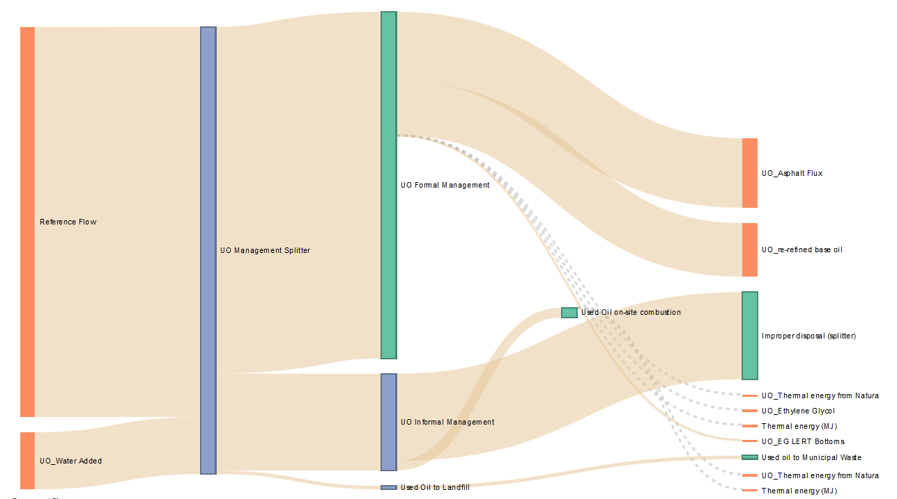

Used Oil LCA is an online tool for assessing and visualizing the environmental impacts associated with recycling used motor oil. The life cycle of used motor oil is modeled with scenarios and fragments and model components can be altered using parameters.
In 2009 the California Senate passed a law, known as SB 546, which changed how the state regulated the management of used motor oil. In order to support future policy making, the bill required the state to perform a life cycle assessment of the used oil management system in place. That study was conducted by researchers at the University of California, Santa Barbara, in collaboration with a group of industry stakeholders, a panel of critical reviewers, and several consulting firms. The study was overseen by the California Department of Resources Recycling and Recovery (CalRecycle). The study resulted in a number of technical documents available online:
Upon completion in July of 2013, it was desirable for the resulting technical report to be accompanied by an interactive version of the inventory model that was created for the study. However, existing technologies fell short of the agency's requirements for transparency, cost, and ease of use. A new project was conceived to enable the study's results to be published openly and at zero cost to data users and members of the public. That project (DRR-13026) began in September, 2013 and concludes in September, 2015. Antelope is the nickname of the deliverable software elements and specifications for that project.
Fragment
Fragment Flows
Scenario
Scenario Parameters
LCIA Methods
Process LCIA
Fragment LCIA
A life cycle inventory fragment is a piece of a life cycle inventory model. A fragment can be described as a set of nodes connected by links without any loops. Each node in a fragment is either a process, a sub-fragment, or an input or output flow that is exchanged with the external world. A fragment has an implicit "system boundary" defined by the nodes it contains. Input or output flows cross the system boundary.

A Fragment showing the top level of the Used Oil Management LCI model.
Describe Fragment Flows
A scenario is composed of a top-level fragment and a list of parameters of various types. The LCA Tool contains the following two scenarios which are visible to all users.
Scenario parameters are used to override the default value of a model component.
Help on LCIA Methods
Describe Process LCIA
Help on Fragment LCIA